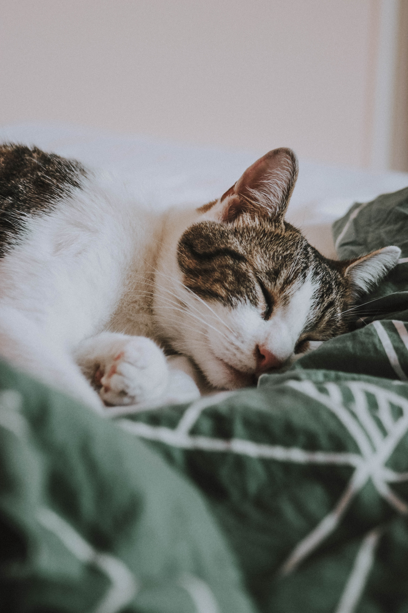

Youtube
#cat
#is
#cuuute
귀여운 하얀 고양이가 잠을 자고 있는 영상 | Web_fe 2주차 과제
10K views 1 month ago
1k
0
Share
Save
Report
Kang hanlim
10K subscribers
subscribe
Up next

잠자는 귀여운 고양이2
Kang hanlim
5k views
아기고양이
Kang hanlim
3k views
상자 속 고양이!
Kang hanlim
2k views

 아기고양이 Kang hanlim 3k views
아기고양이 Kang hanlim 3k views 상자 속 고양이! Kang hanlim 2k views
상자 속 고양이! Kang hanlim 2k views